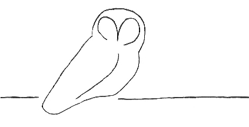

|
 |
Owl Monitoring SystemManager Installation Manual |
| 2.1. | Manager Installation | ||
| 2.1.1. | Preparatory Steps | ||
| 2.1.2. | Installing Third-Party Software | ||
| 2.1.2.1. | Nagios Core and Plugins | ||
| 2.1.2.2. | nagiosgraph | ||
| 2.1.2.3. | rrdtool | ||
| 2.1.2.4. | drraw.cgi | ||
| 2.1.2.5. | Perl modules | ||
| 2.1.3. | Installing the Owl Monitor Software | ||
| 2.1.3.1. | Unpacking the Owl Monitor Software | ||
| 2.1.3.2. | owl-dnswatch | ||
| 2.1.3.3. | owl-perfdata | ||
| 2.1.3.4. | owl-newsensor | ||
| 2.1.3.5. | owl-transfer-mgr | ||
| 2.1.3.6. | Data-Archiving Programs | ||
| 2.2. | Modifying Configuration Files | ||
| 2.2.1. | Save Files! | ||
| 2.2.2. | nagios.cfg (Nagios) | ||
| 2.2.3. | cgi.cfg (Nagios) | ||
| 2.2.4. | resource.cfg (Nagios) | ||
| 2.2.5. | share/config.inc.php (Nagios) | ||
| 2.2.6. | nagiosgraph.conf (nagiosgraph) | ||
| 2.2.7. | map (nagiosgraph) | ||
| 2.2.8. | htpasswd.users (Apache) | ||
This section gives installation procedures for setting up the Owl Monitoring software on manager hosts. There are two sections, an installation section and a configuration section. The installation instructions discuss software installation of Owl software and supporting third-party software packages. System configuration is also detailed in this section, but only for non-Owl-specific configuration. There are a number of Owl-specific configuration actions that must be performed and these are detailed in section 4.
The Owl manager requires Perl. You must install it on your system if it isn't already available.
It is possible (and not too difficult) to run multiple instances of the third-party software packages (e.g., Nagios, nagiosgraph) on a single host, but care must be taken when configuring, building, and installing the software. Without careful work, an existing installation may be overwritten by a later installation. These instructions assume that only one instance of each package will be installed on the manager host.
Below is a diagram of the flow of Owl sensor data on the Owl manager. The details may not make sense at this stage, but this will show how the various pieces fit together.
You may want to create two unprivileged users for use by the Owl manager. One would run the various Owl commands, and the other would be used for sensor data transfers (in the case that the sensor is to initiate transfers.) The first user will need rwx permission to all the Owl directories and files. The second user will need to be able to write data into the Owl data directories.
In the following instructions, it is assumed that a single user will created for the Owl manager and it will be referred to as the Owl User.
The following is a possible set of directories:
| /owl/data | top-level data repository | |
| /owl/old.data | top-level data archive | |
| /owl/data/sensor-portland/dnstimer | sensor-portland's DNS timer-data directory | |
| /owl/data/sensor-portland/history | sensor-portland's monitoring history (for Nagios) | |
| /owl/old.data/sensor-portland | sensor-portland's data archive | |
| /owl/data/sensor-oslo/dnstimer | sensor-oslo's DNS timer-data directory | |
| /owl/data/sensor-oslo/history | sensor-oslo's monitoring history (for Nagios) | |
| /owl/old.data/sensor-oslo | sensor-oslo's data archive |
Nagios, along with a web server, should be installed such that they will be restarted at system boot time.
This table shows the most recent software versions that were tested with the Owl Monitor.
| Package | Version Tested with Owl | |
| Nagios Core | 3.4.1 | |
| Nagios Plugins | 1.4.16 | |
| nagiosgraph | 1.4.4 | |
| rrdtool | 1.4.7 | |
| drraw.cgi | 2.2b2 |
$ ./configure --with-command-group --prefix=/owl --with-nagios-user=owl-monitor --with-nagios-group=owl-monitor
The same prefix, username, and groupname must be used when building Nagios Core and Nagios Plugins.
Multiple instances of Nagios can be installed on a single machine. This can be useful for segregating different things being monitored. However, you must be careful when doing this. In particular, even if the --prefix option was given to configure, the "make install-init" and "make install-webconf" commands will overwrite existing Nagios files.
If you choose the manual installation, you may skip most of this section and pick up at the discussion of the map file.
If you choose to install with install.pl, you must know that it looks like several of the steps are not performed by the script. After running install.pl you must verify that the manual steps from "Restart nagios" to the end have actually been taken.
install.pl will configure the package, install its files in the appropriate places, and modify Nagios and httpd files as needed. A variety of options allow for site-specific installation layouts. In addition, you will be prompted for many directory and file names prior to install.pl completing its work. If it can't find one or another file that it must update, then at the end of execution it will provide a set of steps that you must manually perform in order to complete the installation.
The --dry-run option will show you what install.pl would do, so that you may verify where things are being copied. It isn't required, but it wouldn't be a bad idea to use this option prior to the actual install.
One thing install.pl is likely to say is that you must add a Nagios command file. This file probably already exists, and you must find it. It is likely to be called something like commands.cfg and be located in the etc/objects directory in your Nagios installation. Check names carefully when making this modification, as commands.cfg already has a process-service-perfdata command and install.pl will have you add a process-service-perfdata-by-nagiosgraph command.
install.pl logs all its actions, including the manual-intervention actions, in the install-log file. Unfortunately, the command line is not recorded in the log file, so it might be useful to save that somewhere yourself.
I have used this command to successfully install nagiosgraph:
$ install.pl --prefix /owl/nagiosgraph --nagios-user owl-manager --nagios-cgi-url /nagios-owl/cgi-bin \
--nagios-perfdata-file /owl/var/service-perfdata.out --log-dir /owl/var --layout standalone
I do not let install.pl update the Nagios or Apache configurations,
which it will prompt for; I prefer to make those modifications myself.
Refer to the install-log file to see what remains to be done.
The README file contains steps for manual installation and it looks like several of the steps are not performed by install.pl. If you use install.pl to install nagiosgraph, verify that the manual steps from "Restart nagios" to the end have actually been taken.
You may have to manually copy the nagiosgraph.ssi file into place. This file is in .../nagiosgraph/examples/nagiosgraph.ssi and it should be copied into your equivalent of /owl/share/nagiosgraph.ssi.
Before nagiosgraph can be used by the Owl manager, the map file must be modified to recognize data from the Owl plugins for Nagios. The required modifications are discussed in section 2.2.7.
The drraw.conf must be edited for this installation. Some of these edits are required and some are optional. Each will be marked as to whether or not you must make the change. This file is a Perl file, so the configuration values are set according to Perl's language rules.
'/owl/nagiosgraph/var/rrd/sensor1%20h-root%20foo.com%20A' => '[Kyoto H foo A]',
'/owl/nagiosgraph/var/rrd/sensor1%20h-root%20foo.com%20NS' => '[Kyoto H foo NS]',
'/owl/nagiosgraph/var/rrd/sensor5%20h-root%20foo.com%20A' => '[Cairo H foo A]',
The identifier should be unique for each database directory.
The @dv_def array is used to select data from the database. The @dv_name array is used to provide titles for each graph. The @dv_secs array is used to provide the count of seconds for each graph.
The following example values show the relation between the three arrays.
@dv_def = ( 'end - 15 minutes', 'end - 60 minutes', 'end - 4 hours',
'end - 12 hours', 'end - 24 hours', 'end - 1 week' ,
'end - 1 month', 'end - 1 year');
@dv_name = (
'Past 15 Minutes',
'Past 60 Minutes',
'Past 4 Hours',
'Past 12 hours',
'Past 24 Hours',
'Past Week',
'Past Month',
'Past Year'
);
@dv_secs = ( 900, 3600, 14400, 43200, 86400, 604800, 2419200, 31536000 );
(optional)
$saved_dir = '/owl/nagios/var/drraw/saved';
(required)
$tmp_dir = '/owl/nagios/var/drraw/tmp';
(required)
$ERRLOG = '/owl/nagios/var/drraw/errors.log';
(required)
Modules required by the Owl manager:
It is likely that some of the third-party software may require other Perl modules. The installation documentation or process should inform you of what must be installed on your system.
$ tar xzf owl-monitor.tar.gz
This command unpacks the Owl distribution in the current directory. This
can be unpacked anywhere you want, but it is a good idea to do it in the Owl
manager's home directory.
Most of the Owl commands will be in the owl-manager/bin directory. These commands can stay in that directory or be moved elsewhere. If they remain in their own directory, it would be helpful to add the directory to your shell's path.
my $OWLDATA = "/owl/data";
my $GRAPHINSERT = "/owl/nagiosgraph/bin/insert.pl";
No local modifications are required for owl-newsensor.
Copy owl-newsensor to a directory which will be its home. This could be anything that is convenient for you; e.g., /usr/bin, /usr/local/bin, ~/mystuff, or /owl/scripts.
No local modifications are required for owl-newsensor.
The first stage of the archive process moves old data from the sensor's data directory to the sensor's archive directory. Data is considered old if the file's timestamp (in its name) is older than two days. This part of the data archiving should be performed once per day, depending on how frequently the sensors perform their own data archiving.
The second stage of the archive process combines a month's worth of sensor data into a single compressed tarfile. This should be performed several days after the end of the previous month.
The Owl data-archival programs assume that all sensor data are stored in a common directory and all the archived data are stored in a common directory. They will segregate data by sensor in order to prevent it from getting mixed together. For example, when handling data for the sensors dresden and kvothe, these programs might expect the following directories to exist:
/owl/data/dresden
/owl/data/kvothe
/owl/data-archive/dresden
/owl/data-archive/kvothe
This first set of programs will archive data for all the sensors that report to an Owl manager. They must be told where the sensor data are stored and where the data archive is kept.
This second set of programs will archive data for a single sensor that reports to an Owl manager. They must be told where the sensor data are stored and where the data archive is kept.
More information about each of these programs is available in their man pages.
Copy these archiving programs to a directory which will be their home. This could be anything that is convenient for you; e.g., /usr/bin, /usr/local/bin, ~/mystuff, or /owl/scripts.
In the basic Nagios installation, /nagios/etc holds sample configuration files, which can be modified for use.
The various configuration parameters for Nagios could be included in a small number of files, but the standard arrangement groups the parameters into separate files. The nagios.cfg file is the primary configuration file for Nagios, and at run-time it acts as the focal point to collect the disparate configuration files for the Nagios daemon.
A cfg_file line is used to tell Nagios to include the specified line. Adding or deleting these lines will control which files are included in the Nagios configuration.
As a result of the Nagios build and installation process, the nagios.cfg file should be mostly configured already. The Nagios configuration file is well-documented, so figuring out how to adjust its fields shouldn't be too difficult. There are a few things that must be done to prepare it for Owl monitoring. These directions assume that Owl monitoring is the only monitoring that will be performed by this installation.
Nagios uses this file to hold a small amount of file-location data. The following actions must be taken:
$cfg['ng_cgi_base_url']='/nagiosgraph/cgi-bin';
$cfg['ng_cgi_base_url']='/nagiosgraph-owl/cgi-bin';
This is the configuration file for Nagiosgraph. Several settings must be checked and some Owl-specific setting copied in. The following actions must be taken:
nagiosgraph uses a file of data definitions that describe how to extract data from Nagios plugins and how to handle the extracted data. The file is a collection of Perl expressions that are evaluated by nagiosgraph. This file is named something like /owl/nagiosgraph/etc/map.
The Owl manager distribution contains a set of additional, Owl-specific definitions that must be added to the map file. These definitions are in ng-owl-map. Copy the contents of this file into the map.
Strictly speaking, this file is not a Nagios file, but is instead an httpd file. The Nagios configuration file for httpd gives the name of an htpasswd.users file. Use the htpasswd command to create and populate this file with the users that should be allowed to access the Owl monitor. These users must have their permissions defined in the Nagios cgi.cfg file.
Proceed to Section 3. An Interlude on
Sensor Queries for important information about defining the queries
gathered by your Owl manager.
If you have already read Section 3,
you may continue on with Section 4.
Adding Sensors to complete the installation of the manager.
|
Section 1. Operational Overview |
Owl Monitoring System Manager Installation Manual |
Section 3. An Interlude on Sensor Queries |